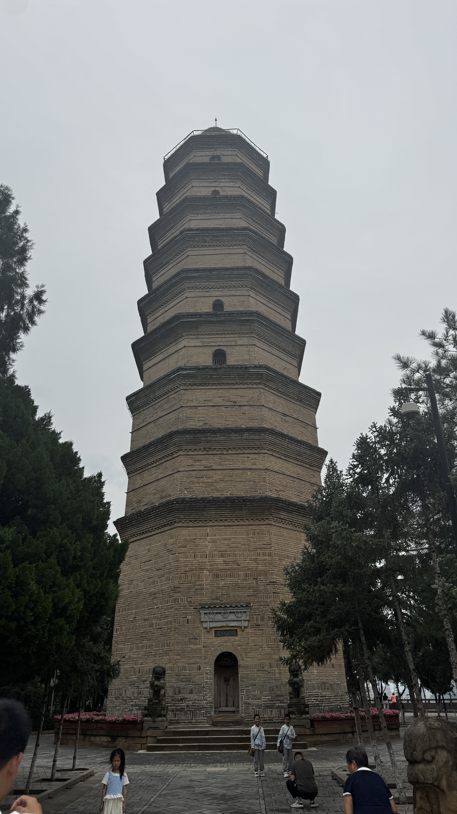
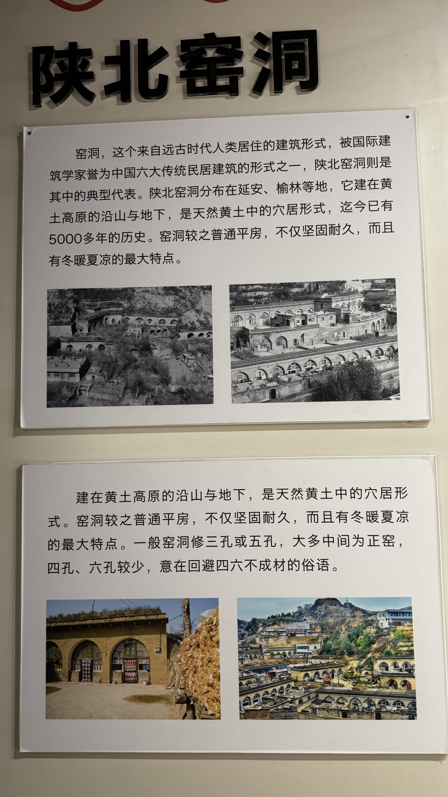
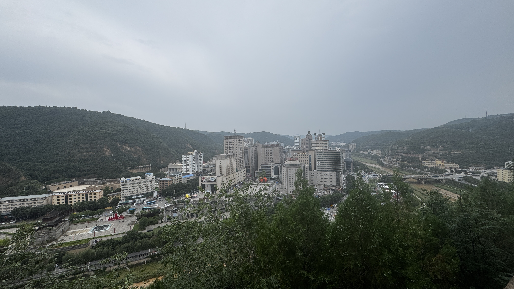
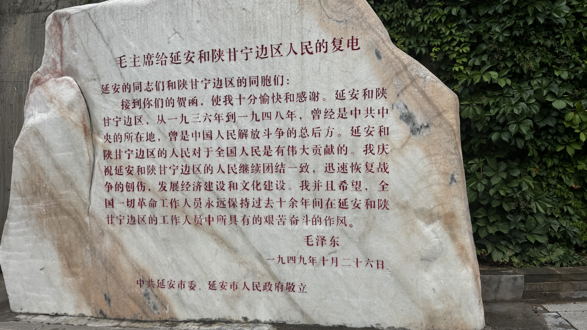

陕西 · 延安 · 革命圣地
延安的标志性建筑
中国革命的精神象征
延安宝塔：始建于唐代，明代重修，高44米，共九层
宝塔山，位于延安城东南，因山上建有宝塔而得名。宝塔始建于唐代，距今已有1200多年历史，明代万历年间重修，塔高44米，共九层，是延安的标志性建筑。
1935年10月，中共中央和中央红军长征到达陕北，延安成为中国革命的圣地。宝塔山作为延安的象征，见证了抗日战争和解放战争的峥嵘岁月，成为无数人心中的精神灯塔。
"几回回梦里回延安，双手搂定宝塔山"，贺敬之的《回延安》道出了宝塔山在中国人心中的特殊地位。

陕北窑洞：中国六大传统民居建筑形式之一
窑洞，来自远古时代人类居住的建筑形式，被国际建筑学家誉为中国六大传统民居建筑的形式之一，陕北窑洞则是其中的典型代表。
陕北窑洞分布在延安、榆林等地，建在黄土高原的沿山与地下，是天然黄土中的穴居形式，迄今已有5000多年的历史。窑洞较之普通平房，不仅坚固耐久，而且有冬暖夏凉的最大特点。
靠山式和沿沟式，窑洞常呈现曲线或折线型排列，有和谐美观的建筑艺术效果，类似现代楼房。
主要分布在黄土高原区没有山坡、沟壑可利用的地区，先挖方形地坑，再向四壁开挖，形成四合院。
一种掩土的拱形房屋，有土墼、土坯拱窑洞，也有砖拱、石拱窑洞，无需靠山依崖，能自身独立。

从宝塔山俯瞰延安城：革命圣地的新面貌
登上宝塔山，俯瞰延安城，延河穿城而过，两岸高楼林立，呈现出一幅现代化城市的画卷。曾经的黄土高原小城，如今已发展成为陕北地区的政治、经济、文化中心。
延安新区建设是当今亚洲乃至世界上在湿陷性黄土地区规模最大的岩土工程，"削山建城"相当于在山上再造两个延安老城区的面积，在世界建城史上也属首例。

毛主席给延安和陕甘宁边区人民的复电（1949年10月26日）
1949年10月26日，毛主席给延安和陕甘宁边区人民复电："延安和陕甘宁边区，从一九三六年到一九四八年，曾经是中共中央的所在地，曾经是中国人民解放斗争的总后方。"
"延安和陕甘宁边区的人民对于全国人民是有伟大贡献的。我庆祝延安和陕甘宁边区的人民继续团结一致，迅速恢复战争的创伤，发展经济建设和文化建设。"
延安精神：坚定正确的政治方向，解放思想、实事求是的思想路线，全心全意为人民服务的根本宗旨，自力更生、艰苦奋斗的创业精神。